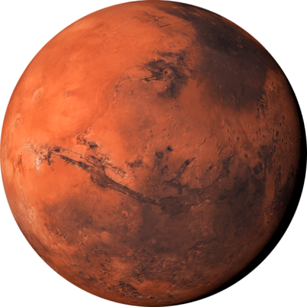

With having to implement our api data from Nasa, i immediately
thought of a space themed website where the Nasa live data would fit
perfectly into. This website isnt a website about space, but rather
just contains a dark theme centering around how the Nasa api would
fit into appropriately. My colour themes revolve around black, white
and light blue. This makes it easy on the viewers eye as the white
text works well to contrast against the dark background. In order to
not strain the viewers eye with multitude of white text i have also
added light blue colours to contrast well against the dark
background, but not be too bright like the white and cause eye
strain.
My homepage is simple and doesnt include a lot of information.
Displayed on the left is a brief overview of the website. Underneath
is a button which leads into the data visuals page which will
contain all visual data within the future. On the right side of the
page, atop the image of the earth the Nasa live api would be
displayed. My navbar is also kept simple. A few links to all my
pages with the inclusion of a moon shaped logo on the left.
For now all of my pages follow the same background as they are just
placeholders for the meantime. My documents page is where users can
find my blog posts as well as design documents displaying my process
on the website. I have structured it to be two bodies of text with
scroll bars side by side. This gives the page a neat look especially
since the blog post and design doc contain so much information.
The background to these textboxes are transparent with a slight
light blue hue in order to match the background. The blue hue once
again adding to the themes of colours used. I found it also easier
on the eye as a solid background would stand out too much from the
image in the back. It would not only look ugly and take away from
the visuals of the background but it would also be straining as
there would be way too many colours showcased on the page.
Revised Style Guide
I have stuck to the space themed website, only utilizing a few
colours to make up my site. Such as white, black, dark, purple, pink and light
blue. (Space Colours)as my main colour themes. Not only do these themes suit the space atmosphere, but work
well with how i have structured everything.
All of my main headings on every page accompany the same light blue
hue which stands out from the dark background. Any smaller headings are a purple colour, to stand out from the predominantly blue hues, but to also
stick with the space theme and consistency.
My buttons, bar chart as well as text boxes all have that same
light blue colour, standing out from the predominantly white text.
My footer and search bar are the same blue, just a bit darker to
also stand out, but not too much. I also wanted a few different hues
instead of just light blue and white. Purples and pinks, colours typically associated with a galaxy is
what i decided to use on a few elements such as the new interactive scatter plot and some text colours, such as on
my blog page.
Blues, purples, pinks and blacks all work well together.
Along with these colours, i have added additional colours within my Art in the Data Art sections. I wanted to add some vibrancy. Even though my
website consists of blues, purples, pinks etc, i didnt want to make my art pieces that same colour, it would feel dull. This is why i have decided to
give them a more vibrant approach, from the static data ranging from all sort of vibrant colours, however they are toned down by being transparent so that the vibrancy
wasnt too overwhelming. The interactive data art, lost the transparency but only because i have now decided to stick with the hues or purples and pinks as colours. To
make it stand out from the rest, the colours are solid and shades of lighter yellows and beiges have been added to balance it out.
Each page but the data visuals, blog and design page, contain the same space background
image which works well with the content and space theme. I have
decided to change it up for the data visualizations and design page not only to
create a bit of change, but because these are no static pages that involve scrolling. I thought scrolling down
the vast emptiness of space would be cooler than a reocurring image of earth.
My theme of the website is it acting as a vessel to take users on a journey through space, as well as showing them how i have constructed this vessel (the website itself)
This plays well with the background as well as my utilization of certain images, like present on the blog posts to make it appear that you are
traveling past different planets as you discover this information.
Here is where i decided to add images of different planets as images around the blog posts and design doc. Not only for more vibrancy and life, but to act as the solar system
and further play into the "journey" aspect i have mentioned above. I have structured it in such a way that on the documents page, the planets go down in terms of how they are placed in the solar system.
The space background also helps keep the site feel less cluttered and busy, especially in areas that are cluttered with information. The black works with multiple images as well as
colours and information. If i have used other images, it wouldf feel very busy, this is why my earth background was only
confined to a few pages. I have also only selected the earth background to suit pages as it being the "beginning of a journey"
as you are near earth, and by diving deeper and further into the information the background changes to the ever expanding universe.
On my documents page, i have completely redesigned it to give it a more interactive and non cluttered feel.
My design doc was already getting super lengthy, it was annoying to have to scroll down a small box for something with
so much information. The same thing with the blog posts. For this reason i have decided to split the pages
and display them seperately. My blog post page, displays a sneak peak of my three blog posts, which one can click
to read more. This will then open up a seperate page with the full blog post.
My design document has taken a very similar theme to my very first website, but i have refined it a lot. There is a
sticky navigation menu on the left which consist of a few links, which take you to different parts of the page as you scroll further down.
I have also decided to display my wireframes differently, i have placed them in an accordion which nicely confines them to a few headings,
which expand with the actual wireframe and descriptions upon click. This makes this information nice and confined and not just
taking up even more space in my already long document.
I have also decided to add a footer to every page to give my website
a finished look, as it was mentioned before that without one it made
my website feel "endless". The footer's colour is a darker blue with
small white writing, which fits the theme of my website and adds to
its consistency, but to also make it stand out from the rest, just
not too much hence the backgrounds darker colour.
UI and UX
Simplicity was the main focus of my website. Since it would be
structured around data visualization, i wanted to create a modern
simplstic look so that when data api's and arts were added it
wouldnt feel cluttered. For this reason it would make it very easy
for the user to navigate around the pages and view the different
information without it being cluttered and causin eye strain.
My home page is simple. As explained within the style guide,
features a brief summary of the website along with a button that
will take the user to the visual data page if they wish to learn
more about what this website is about. The contrasting white text
leads the viewers eyes to the brief first. My plan would be to also
add the Nasa api on the right of the homepage as it is equally
improtant and relevant to what the website is about. The users eyes
would wander back and forth between the two to give them a better
understanding.
My navbar is displayed at the top right, above the summary and
background image to stand out from them. Its font not as big as the
homepage heading as it is not the main focal point of the page.
However it is a white contrasting colour that still sticks out and
once users are done exploring the homepage their attention can be
averted to the navbar. When one hovers their cursor over it, it
displays a interactive white line transition signaling to users
which link they are hovering over and where it would take them.
My documents page being the only active page besides the homepage
offers the same consistent background but i have decided to
implement two text boxes with scroll bars aside as the information
from my blogs and my design document are large. Displaying them in
these small boxes gives my page the same consistent simplistic feel
and doesnt trouble the users with bodies and bodies of information.
Rather they can choose what they wish to view by scrolling.
The website as a whole isnt revolving around space and nasa apis,
but rather how i use and structure my data. My homepage would cater
for the display of the nasa api where the rest of my pages will
feature other data and information added in the future. Ive done
this to show the user that i can implement data accordingly and not
have a website with a live Nasa information displayed randomly. It
all has to fit in place and every bit of information and display has
to have a consistent meaning behind it.
Revised UI and UX
I think i consistently kept up with the simplcity aspect of the
website. I tried my best to use my ui and ux to minimalize clutter
and stay neat the best way i could.
My homepage was originally going to contain my API but with me
realizing we will need to display two API visualizations i decided
to rather group them together in one page to work as a whole. If i
had not this, there would be one small visualization sitting alone
on the page and one random visualization sitting on the homepage. It
would mess with the spacing and layouts so i have decided against
this.
I have also added a search bar to load all the api data. Admittedly,
whilst this slows down the performance of that page, i really wanted
to create a cool effect where the user could really engage with the
data and manipulate its outcome based off of different dates. Like
this it wasnt just the same information displayed over and over
again, it is engaging to where you could cycle between multiple
different dates and recieve different information.
I have decided to group both API visualizations in different
sections within the page, not only because they display different
data but because the chart would take a while to load from the rest.
Whilst the chart was loading, the astronomy image and description
API would at least be present as the main emphasis on the page, the
chart sitting below that, nicely spaced out.
To improve readability and user experience i have completely redesigned my documents page which now
only features the
design doc contents within. The document now includes a scrollable page with sections neatly spread across.
Blue and purple text accompanies the headings whilst
the body stays as white. This all working well with the space background. There is also a navbar on the left
that act as a navigational
box. The text within are links that upon click, take the suer to a certain part of the page. Upon hovering
over the navbar the
box also changes size and colour to give it an interactive element.
The design doc mainly features headings and texts fort each section but the wireframes, which sit neatly in
an accordion. I have done this
to help with space management as well as neatness of the page. No need for all the different wireframe info
to float around
when it can be accessed on click.
There are also various different planets of the solar system placed next to each section of the design doc. I have done this just to add
some life to the page since there was already so much text. To break away some of the bigger bodies of text, i added in a few images as well, just to give the reader a break.
As mentioned the blog posts have been taken out the documents page, and now sit apart of the navbar as its own page. On click it takes you to a fixed page
with a display of three boxes. I have changed my blog page to accompany a scrolling bar, which neatly displays 3 blogs horizontally,
then upon scroll, reveals the other two. This has been done to accompany the many more blog posts added as well as to achieve a neat, readable effect.
The blog boxes on the blog home page also feature images, which correlate to the image of the first planet seen when taken to that blog post.
The boxes also glow a shade of blue when hovered over for an interactive effect.
For the actual blog pages themselves, i have split the blog into two sections, displayed in two boxes to achieve a neater effect, as well as
to give the reader a break from all the text. The reference list now lies at the bottom of the page, sitting in a consistent blue box, as opposed to sitting within the previously tiny blog boxes.
I have also changed my footer and made it stick to the bottom of the page instead of in a fixed position that moves on scroll. This didnt really
work well before because a footer is there to signify the end of the page, not follow users whilst they are scrolling. The fixed scrolling
aspect is something i should have added on my navbar. unfortunately, my footer refuses to work within my interactive data art page so it has not been included in there.
It was a bit challenging to group some of the UI and display it
accordingly because i had a lot of divs present which once changed
to a more semantic text, would shift items around my webpage.
Fortunately, i was able to remove majority of my divs and fix this,
but there are still a few divs present that for the time being,
cannot be changed without shifting information all over the place.
This is something i will work on in future. For now i was able to
neaten my code up a bit and create for a more semantic website
whilst keeping elements in my page intact. Even though my layouts
fit perfectly on my laptop, majority of them are unfortunately hard
coded to keep my UI and UX in place. This is something i have been
struggling with, though my UI UX elements go well, they
unfortunately tend to shift around pages sometimes due to my
grouping. This also affects my Responsiveness which i will go into
further below.
The page where my UI and UX were incrediblly important was in my
Data Visuals page. Because i have implemented a "search bar" that
only loads content based off of certain dates there were many
indicatiors that had to be added to let the user know what to do,
what is happening etc. Examples are, when the user would just click
to "search" without having put in a date, obviously nothing would
happen and no content would load. Due to this, i have added a small
description at the top of the page just notifying users how the page
works, what content it offers etc. I have also added a simple alert
function that if users have not selected a date and click to search,
an alert will pop up and notify them to select one.
Future dates, obviously will have no content as we are situated
within the present. So i have also added an alert function that if,
users click a date in future will simply just alert them that the
action cannot proceed, they cannot select a future date.
Another issue i had to tackle with was that on search, my API image
and description (from APOD) would load first, and the d3 chart (from
Asteroids NeoWs) would only load after. My page was structured to
hide all of the information, until a date has been selected,
otherwise random "missing" images and random hovering text would be
present. Because my chart and its information was only displayed
further down into the page when the user scrolls, as it is loading
it only displayed the APOD image and description on the main page,
and made it seem like there was nothing more as the page didnt
expand. Naturally, users will eventually click off, not expecting
anything else to pop up so it was vital for me to add a loader,
telling users that there is a chart loading below, to please be
patient. This was users know there is still more information on the
page below the API image and description.
With the implementation of my new interactive graph, i have forgotten to add this element so every time a user searches again, the interactive chart
will display for a split second before everything loads. This graph also sits neatly below the static graph. The black space background and my newly added headers have neated the page up.
The contents all work together with this black background as many charts, images and text have different colours. I have however, made that
the colours all fit a space theme, being blues, purples, pinks, whites etc.
The same consistent blues, purples, blacks and pinks have been added throughout the website to adhere to my space theme. They have been
nicely categorized according to certain headings and elements having certain colours.
Wireframes
Homepage
Homepage Wireframes
Previous Iteration
Final Iteration
My very first iteration included a homepage where
the main idea of the website would be displayed on the
left, and a live api would display on the right. Upon experimenting, this idea would make for weirdly scattered api data which
would defeat the purpose of having them on the data visuals page.
I have then changed it to purely display the websites information on the left, with an animated button below that to take users to the
data visuals page.
Old Iteration Includes:
Empty space on right
Earth background image
Four link navbar
fixed Footer
Heading and description
Animated button
My final iteration basically remains the exact same, the only different is that there is now a 5 link navbar with the creation of the blog page.
The heading has also been changed from "Data Visualization" to "Wonders of space" with a funky description beneath playing on the idea of this
website being a vessel, that will take you through my journey, as well as space where you will
see the wonders of data visualization through Nasa's APIs.
Final Iteration Includes:
Empty space on right
Changed header and description
Earth background image
Five link navbar
Footer at bottom
Heading and description
Animated button
I have also decided to rework my navbars contents. My blogs
and design doc now sit all within the documents page. My data
visuals and data artwork have their own links.
I have also now included a footer within majority of my pages to give it that finished look. The footer,
staying that same consistent blue seen throughout Instead of being fixed, it stays at the bottom of the page.
Overall, the homepage matches not only colour wise, but font wise and layout wise with majority of my other
pages to keep that consistent, simplistic look.
Documents Page
Documents Page Wireframes
Previous Iteration
Final Iteration
My first ever iteration was to have the blog post as a scrollable box, and the design doc next to it sitting freely on the page.
This made for a very uneven and untidy page, so in my previous iteration i have confined both documents to two scroll boxes sitting side
by side.
Old Iteration Includes:
Blog and Design doc on one page
Whole design doc in one scroll box
Fixed page
No footer
No heading
This made for a very neat look, but as both documents grew and grew, users had to spend a while
scrolling down this small text box, reading smaller text designed to fit these boxes when instead, it could be spread out.
I was originally scared to create a long page of information as my previous websites design doc was a long page of an ugly, unorganized mess.
Therefore, implementing these scroll boxes would neaten things up, which it did. but it wasnt practical.
Now my documents page is designed to cater for the design document only, and all of its contents.
The blogs have been moved to their own page. The content sits neatly spread on the page with a fixed nav on the side
to take users to the content on click. The wireframes have been confined to an accordion function
in order to manage space better and neaten the page up. A footer has also been added at the bottom instead of moving on scroll. I have also added several
images of planets to break away from the documents heavy text, they are placed in such a way that signify their place in the solar system.
Final Iteration Includes:
Design Doc only
Content freely displayed
Fixed Navbar on the left that moves on scroll
Fixed Navbar with links taking users to selected contents
Accordion Box to cater for different wireframes and its information
Footer sits at bottom
Scrollable page
Images added next to headers and between text
Data Visuals
Data Visuals Wireframes
Previous Iteration
Final Iteration
Originally, with the main API to be displayed on the homepage, i was going to add
the second Data Visual alone within this page.
It would inlude a simple heading, image of the api displayed and description.
However due to this being to random, i have changed it to display all APis on one page.
By using a search bar, it would load up the Astronomy picture of the day as well as a static d3 chart with
information on the asteroid API.
Old Iteration Includes:
Two API's
Static Chart and APOD
No APOD and Chart Heading
Fixed page until date has been selected
Selected date loads its information
A lot of empty space
Scrollable page
No footer
Even though my final iteration is similar, it is much more confined now and designed to cater for all three API displays instead of
my previous iteration, designed for two.
Both the APOD and charts have designated headers to section them out a bit better and avoid having so much empty space
In both iterations, without input the page stands empty. Merely displaying the page heading, search bar and text explaining what
the page offers and displays on input. The background has been changed to a space background, so that when content
appears it doesnt conflict. The black black background, working well with all images coming from the API, as well as the
chart and consistent white text i have throughout. Previously there was no footer, but now there is one that sits at the bottom of the page.
Final Iteration Includes:
Three API's
Static chart, Interactive chart and APOD
APOD and Chart Headings
Fixed page until date has been selected
Selected date loads its information
Less empty space
Scrollable page
Footer sits at bottom
Blog Page
Blog Page Wireframes
Previous Iteration
Final Iteration
Old Iteration includes:
4 Blog Posts
Fixed page
Fixed footer
Links in homepage to blogs
Blog post pages have References at the
blog post pages have footer, two blog parts.
There was not much of a change besides the home page of the blog posts, fitting around an added scrolling function. I have
added this to compensate for a total of 5 blogs, and neatly display them.
The rest all remained the same, with no changes to the blog post pages besides the addition of a fifth one
Final iteration includes:
5 Blog Posts
Scrollable bar
Fixed page
footer
Links in homepage to blogs
Blog post pages have References at the
blog post pages have footer, two blog parts.
Data Art Page
Data Art Page Wireframes
Previous Iteration
Final Iteration
Originally, my art page just displayed the Data Art of the Day with its description on that singular page.
Old Iteration includes:
One scrollable page
One data art
description on top, art below
footer at bottom
With
the addition of a second artpiece, i wanted to structure them neatly and have decided to seperate the different works,
into different pages.
I have created one art homepage that displays both my pieces within two cards structured on the right. These cards
act as links to the actual page where the data art sits.
The homepage now includes a description on the left, with the two cards on the right. It has become a fixed page. The two data
art pages display my two data art types, static and interactive.
Final Iteration Includes:
One homepage
Two data art pages
Static Data art page, taken form of the old art page format
New Interactive art page, similar format to new art homepage.
Footer included, except in interactive art page (malfunction)
Data Visualizations Planning
Static Data Planning
Originally, the plan was to use a singular API from nasa to display both the chart and api data.
I have selected the APOD api, which mainly only gave pictures of the day as well as the descriptions and details
about chosen image. There was no actual data that could be relayed within the chart.
By looking further, majority of API's didnt have both data i needed, being an Image and image description, as well as
adequate data i could make chart out of. This is why i have decided to add an additional API, being the Asteroids NeoWs, which
display the near earth object service. This had the perfect data i could use to make a chart.
This is when i also decided to confine both API's under one page.
My original plan was to just have an random image from the APOD api load on my homepage, just to give users
a hint of what the website is about.
But on the homepage, was already an image of earth nicey structured on the right side. The image would just cover it and
randomly hover. Adding a description explaining the api would add long paragraphs of text on my homepage which i did not want.
The data visuals page was all about showcasing my data, and the API as well as D3 chart would sit there perfectly.
Fixed image and description of a random APOD image sounded boring to me, as well as a random fixed chart of asteroids near earth for a certain date just seemed weird.
I wanted to create an interactable environment that changed the API's based off of the users input.
A fixed random image and chart of a random day made no sense and no relevance, but if you could manipulate the API's to display according to
certain dates would not only be interactable, but fun and interesting. It would give the page more meaning than displaying random elements there.
And so, i added a search bar that filters by date.
It was extremely difficult to achieve this but thankfully, with a lot of practice, research and assistance it came together nicely.
It lowered the performance of that page a lot, as the chart took a while to load due to it having to update and change itself based off
of the live data but this was why i have indicated a "chart loading, please wait" element to let users know there is still content beneath.
Because Nasa obviously only has past data or present data updating on their live server, if the user clicked a date in the future it wouldnt work.
Due to this i have added alerts to alert users future dates cannot be selected.
Interactive Data Planning
With one of my two static visuals being about Asteroids, i have decided to make my second graph based off of the same API.
Last time, both my data visuals were based off of two different API's as i wanted to make it diverse. However, basing something off three API's might be too much information.
The APOD doesnt really have any information that can be relayed into a graph, however the Asteroids NeoWs has a ton of information
that i could use, which is why i went with that.
Naturally, my graph will be sitting in the data visuals section. I have manipulated the page to change Nasa's API based off of the date selected.
I wanted to do the same for this graph.
Since my graph will be relaying asteroid information, more in particularly Asteroid size and distance from earth. I have decided to make a scatterplot,
where the dots change based off of the asteroid size. The interactive element i have decided to implement, is whilst hovering over the graph an X and Y crosshair will
appear telling you exactly what the values on the graph are based off of where your mouse is.
When coming in contact with a circle, it will lock on, change colour and the crosshair will display its value on the x and y axis.
Static Data Art Planning
I felt very confused on what data art was and how to create it. I initially wanted to create a space shooter game where one would
destroy incomming asteroids that were on their way to destroy earth. With enough research, i quickly realized that this isnt neccessarily Data Driven Art

It was challenging to find something that would suit my asteroid API data as even though there is a lot, there wasnt a lot that it could work with.
Heat maps didnt really work, i even tried to use Hierarchical edge bundling but i didnt have enough data. With enough time and effort, i realized i could
create a funky piece where the data fluctuates according to different asteroid data to create weird shape, and therefore art!
To do this however, i wanted to group the asteroid data first. I decided to make one line equivelant to one date.
Each line represented a date, and i knew that every day has a different number of asteroids recorded as well as different data.
I decided to bunch them together in columns and then have the lines fluctuate, create bubbles and shapes according to all of the different data represented
within that one day (line). It created a multicoloured pattern whos shape was manipulated based on different data.
It was set to change shape every day, as the data was taken a few months from the current date, which gives a new colourful patterned effect daily. If it was not a new day, upon refresh the data shapes would not change, but the colour still would.
The colours are vibrant, as i wanted it to stand out from the consistent blues and purples i used, but i made the art piece slightly transparent as to not overwhelm the eye.
I am very happy with how it turned out. Originally i wanted it to just be smaller bubbles that are more readable, but i quickly found out
that it not only looks better this way, but it also more artistic.
It also still communicates the different data discrepencies and jumps. Its just jumbled data, so each bubble represents
certain data of the different asteroids, such as their velocity, size and distance from earth jumbled into one.
I have also made it so the data changes daily, as the code takes the current day and subtracts a couple of months to get the required data.
I have done it this way because i was limited to the API only allowing 7 days of data worth. This would make my "Art" just 7 small lines, which would look empty
, boring and plain. This is why i had to manipulate the code to call the 7 days, but from multiple months starting from the current date. I also think its cool that the data changes shapes and colours accordingly.
The colours as i mentioned in my style guide, were originally going to just be the same blues, pinks and purples that i have throughout my website.. however it
ended up looking very bland so i have decided to change the colours to add vibrancy, and to also fit the other new vibrant colours present
along the website from the new addition of planets i have placed accordingly.
Here was how my original data art looked
This is my final data art, the same data present just multiplied by size to give a more vibrant, interesting look.
Interactive Data Art Planning
Due to my previous data art being praised for being very artistic and creative, i have decided to create an interactive piece following a similar route.
The static data, basically showed the different asteroid data for a few days, creating a multicoloured unique pattern daily. For this piece however,
i wanted to have the data also create unique patterns and shapes, but scattered randomly.
Instead of lines representing each day, now each shape is its own asteroid, whos shape changes based on the different asteroid data.
Originally i have also made it to change daily, but i thought that this would rather remain the static arts trait, as this artpoieces main trait was its interactivity.
Unlike the previous art piece, i decided to stick by the space themed colours not to give a similar feel between the too, and a too vibrant one.
Therefore the interactive piece has lost the transparency effect, and the colours remain solid to make it stand out more. To balance out the black, purple hues, i have decided to add splashes of lighter colours of beige to balance everything out.
I have made each asteroid, change not only shape but colour as well. Packed all together tightly in a Mosaic inspired piece. The user can interact with the piece and make the data flow through the other data pieces, as if the asteroid is traveling throughout.
This way it can also be moulded and compared to the other "asteroids" and depending on if the user engages with it enough, the shapes can be dragged and manipulated to form pictures or unique patterns.
Like a mosaic or abstract piece, it can then be interpreted differently according to all these changes.
I am proud with the piece i have created. I enjoy the idea of creating pieces whos shapes and colours are manipulated by the data. Unlike the static piece, as mentioned
i have made this piece fixed so that it does not fluctuate between different dates and therefore will not change colours. I have done this as i felt this piece is to be treated as an actual canvas, an actual art piece
whos elements have been changed by the data once off, but then allows for the user to manually engage and interact with it.
Here was how my final piece looks. Each colourful block represents an asteroid and its data. The shapes can be dragged around and manipulated on mouse click.
Responsiveness
I have struggled a lot this semester with making my device responsive. Mainly because it takes so many lines of code within CSS and in my case,
it is mainly responsive for certain devices such as the Iphone SE.
Certain pages were more responsive than others such as the home page, design doc and static art data page. These pages all fluxuate between different devices and
fit majority of them. I had to remove my left navbar on my documents page which causes for long, tedious scrolling but works fine in term of layouts. My blog post page however, is the most responsive of them all, the blog cards adjusting to several different devices. I unfortunately ran out of time to add this to the rest.
My Data visuals page was the worst and most challenging to make responsive, due to the graphs. I tried but was
unsuccessful in making them responsive at all, it also randomly displays graph information in the beginning which i dont know how to get rid of. My Blog posts page was also challenging, and even though they work on an Iphone SE, Elements had to be removed,
as well as in some pages my links are so long and it causes the page to uneccesarily expand.
I have also not really made the Navbar responsive, it shrinks and moves accordingly, and fits well on the screen on iphones etc however
here i should have implemented a menu. It was something i wanted to do but ran out of time for. Overall whilst my website has definetly
improved in terms of responsiveness from the last.
Reflection
Overall i am very proud with my design. Over the course of this journey i have tried my best to improve the contents on the website and make it more user friendly and functional.
I felt like i improved the design a lot and added many elements that makes my website feel unique but stay consistent.
Even though my styling, grouping and orginization within my code and files are very unorganized, i have tried to tidy up my code and add more comments
to group things a bit better. It also just helped me realize that in my next project, i will make multiple different css sheets so i can group
it accordingly. I will also organize my content within folders next time to group html files, css files and js files to be content specific and not jumpled up as i am aware that i have an unorganized set of files which can be confusing. I have however,
gotten into the habit of commenting what code does or grouping through comments within css and js which is a step in the right direction.
Even though i have a lot of faults, i felt that my strong suit is not only my websites design but the javascript used to display my API's as well as my two data art pieces which i am very proud of and felt are very unique. It was definetly a challenge to code all of these
aspects within Javascript but throughout this journey i have improved and learnt so much.
My only downfall, being the performance issue it causes on my website. This is something i will work on throughout,
to seek to always improve
my website. I have been doing it slowly thanks to the feedback, and i will continue to do so in future.
I have also made my website slightly responsive. Even though it is still horrible, it is much better than what i had last time.
Some of my sites pages respond really well to device changes and some do not. This is my biggest stuggle throughout my journey and
something i will acively seek to improve and work on, along with my code layout, grouping and organization.
I have tried to fix a lot from the given feedback ranging from fixing my code and adding more microtags, to adding in more images, making my web page more responsive etc.
I have tried to fix my graphs according to the feedback too but i couldnt manage to do that. Other than that i think i have improved my site, i have also resized certain images to hopefully improve website
performance.